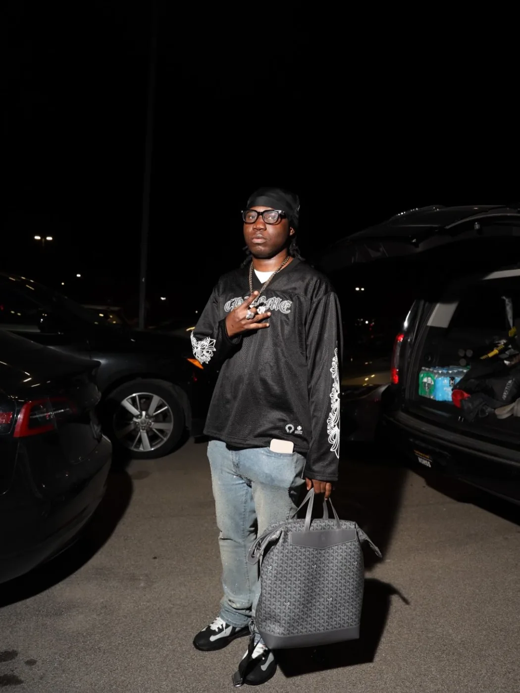

Shouts
Fan messages, shoutout requests, birthday drops, promo tags, and public love can live here instead of disappearing in DMs.
Twitch and LinkMe prove this brand is not only about static music links. It is a live community surface.
Live moments, behind-the-scenes energy, fan interaction, gaming or stream culture, and direct community building.

Fan messages, shoutout requests, birthday drops, promo tags, and public love can live here instead of disappearing in DMs.
Short clips, vertical videos, snippets, performance recaps, and release previews.
A community tag worth turning into a repeatable callout once the meaning is ready for public display.
Netlify Forms ready. Submissions will appear in the Netlify project Forms tab after deployment.